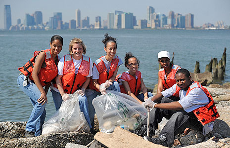
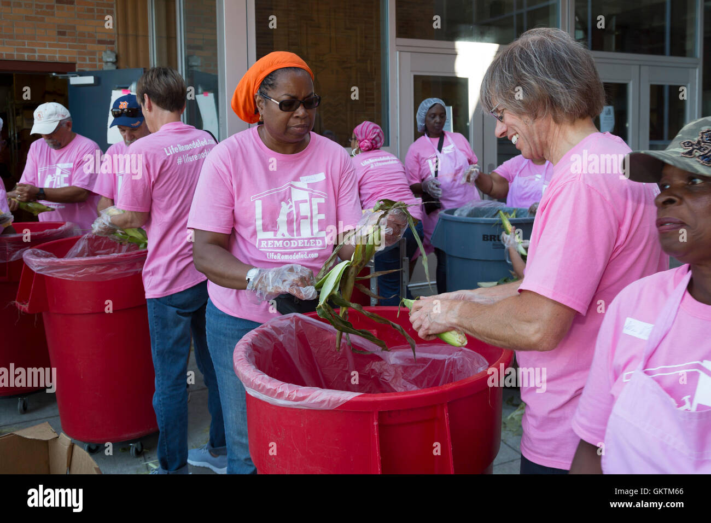
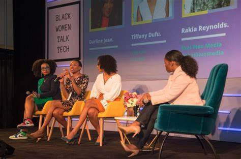
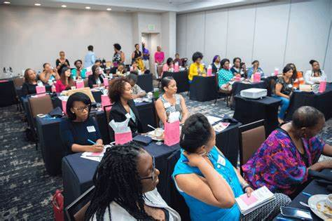
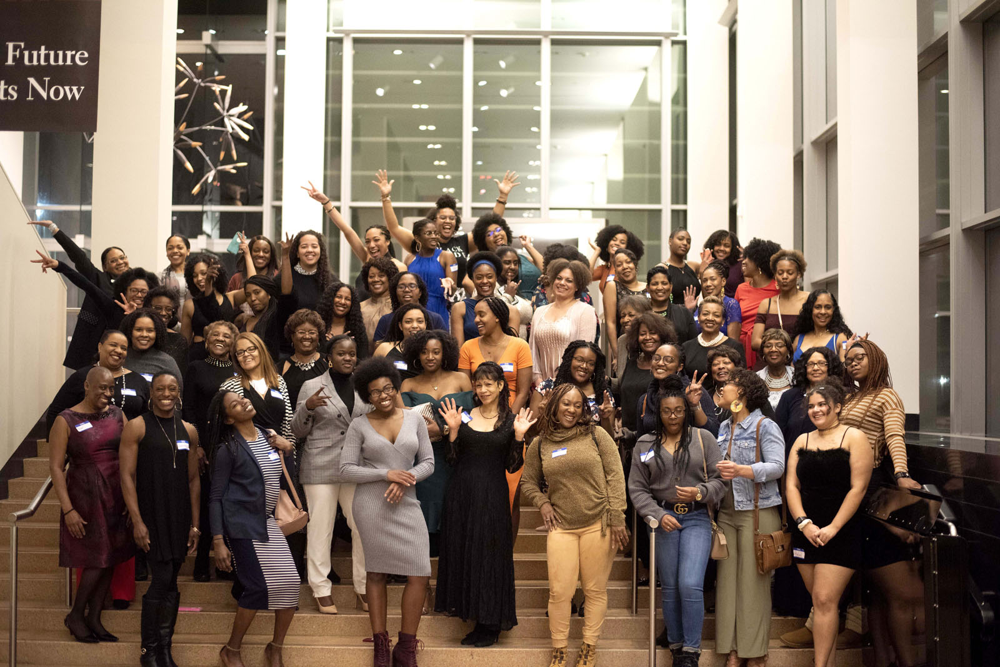

Please view all events via our 1891 Connect Profile
1891 ConnectService
Whether it's helping the less fortunate, cleaning public spaces, or contributing to local projects. Community service is a valuable activity that involves individuals or groups volunteering their time and skills to benefit others or improve their community. It fosters a sense of social responsibility, empathy, and cooperation as people work together for the common good. ommunity service allows volunteers to make a positive impact while developing personal growth and gaining new perspectives. It's an opportunity to give back and strengthen the bonds within a community, creating a more connected and caring society.
|  |  |
Events
Organization events serve as key opportunities for fostering community, learning, and collaboration among members. These events often include networking opportunities are also a vital component, allowing attendees to build valuable connections, collaborate on projects, and gain mentorship from more experienced professionals. Formal events, such as dinners or ceremonies, help establish a sense of tradition and recognition, offering a structured environment for celebrating achievements and reinforcing the organization's goals and values. Together, these elements create a balanced ecosystem for professional and personal growth within the organization.
|  |  |  |